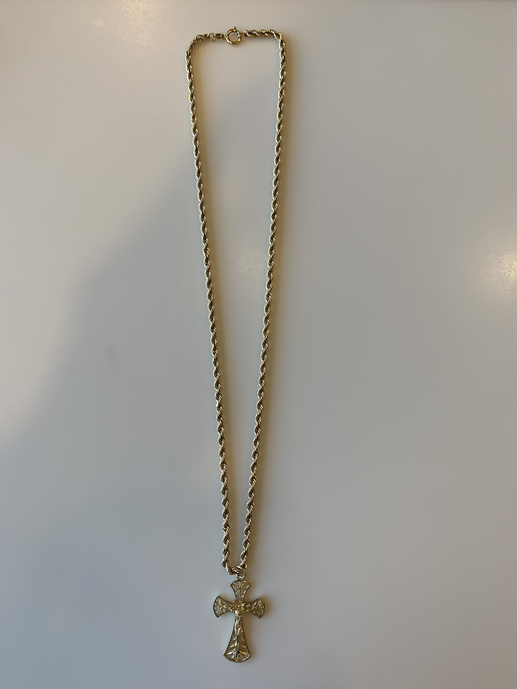

“This is my late maternal grandfather's gold chain that my grandma gifted to me after his funeral. He passed away around my 19th birthday (April 2018) during my freshman year in college. This object is associated with the pain of losing a father like figure in my life who was always there for me since I was born.{1}
The painful emotions are due to the fact that my parents broke the news that my grandfather had a stroke on my birthday and 11 days later he passed away. It was less than a year that I had been living on my own in the mainland and I didn’t have a fully developed support system in Tacoma. I couldn't go home to be with my family because I couldn’t afford to do 2 round trips from Tacoma to Honolulu within the same month. With that in mind there were only 2 weeks of classes left before finals, and I was working through overcoming depression and anxiety. In short, that was the worst month of my life, with everything else going on academically, socially, mentally and personally I was spiraling.{2} I pushed through and finished out well but that was by far the worst month of my life.
Today, I wear this chain everyday because having this token of my grandfather reminds me of the things I’ve overcome in addition to the life that he lived so I could be where I am today.{1} He worked day and night to support his family in Hawaii and in the Philippines, he laid down the foundation to provide more opportunities for our family that would come after him. He is the reason that I am where I am today and I will never forget that because his “American Dream” always had family in the forefront. Having this token of him is a constant reminder that I’m his legacy and I can’t throw away the foundation that he laid down for me, my sisters and our entire extended family that he sponsored to come to the U.S.
”
Aldrin Villahermosa
2018
